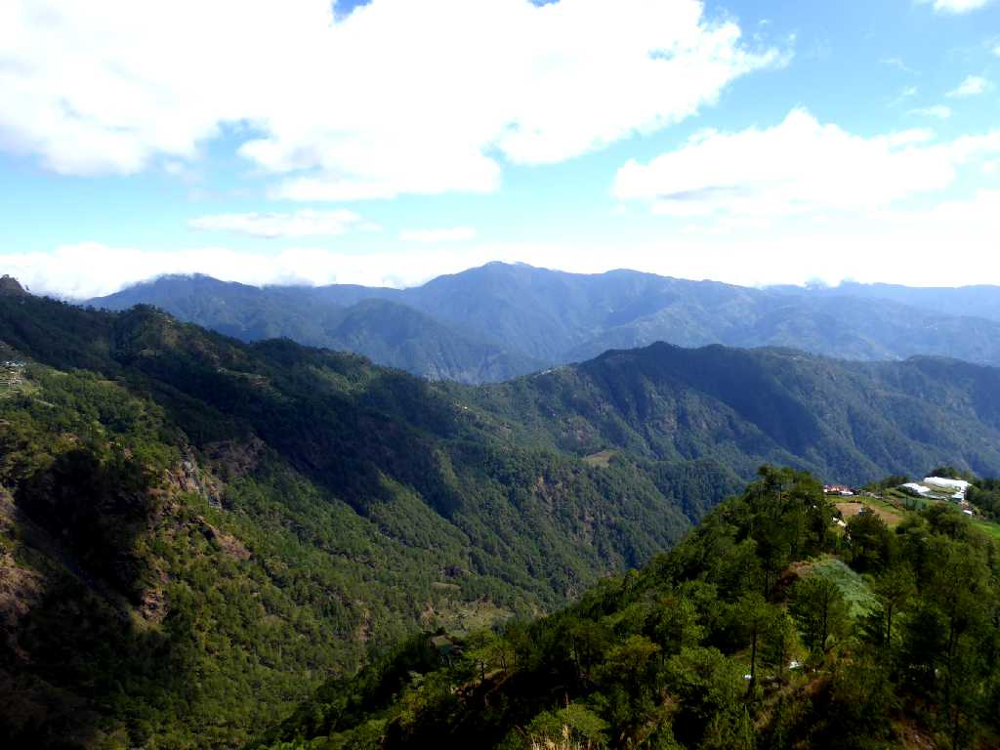
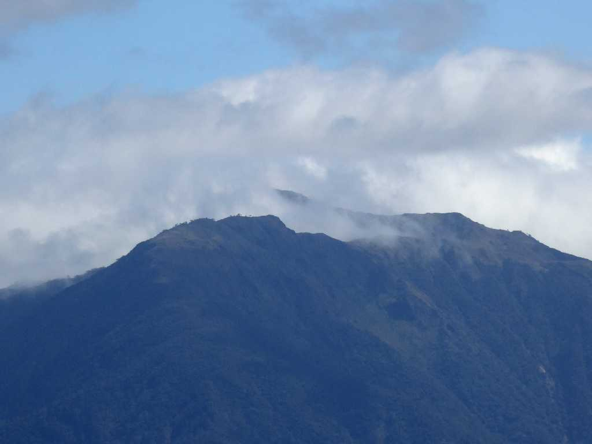
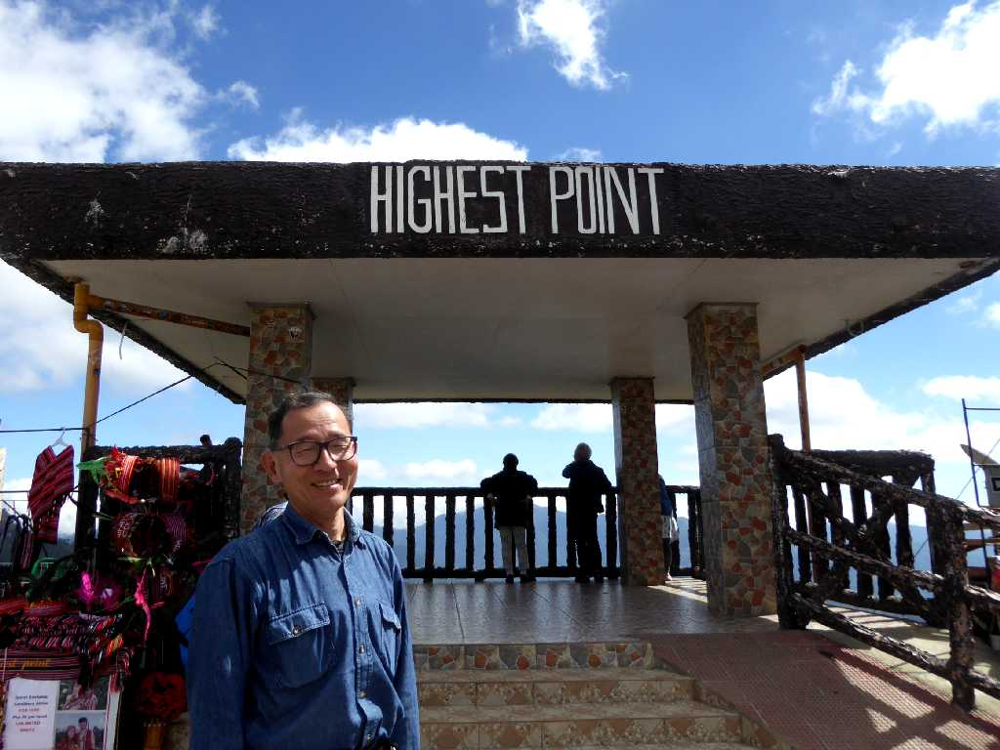
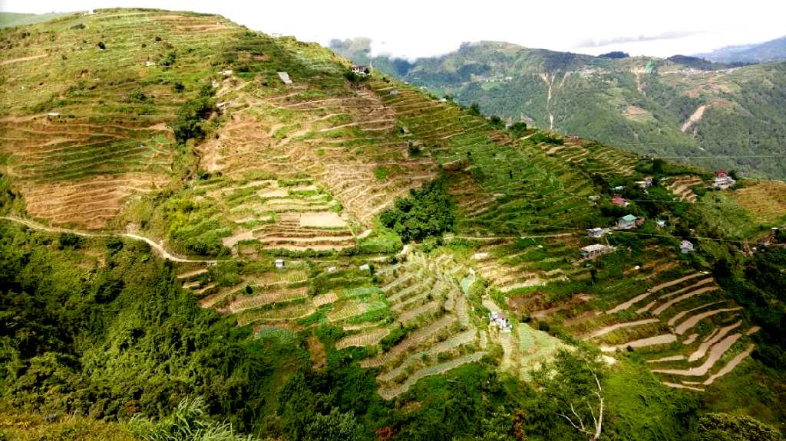

7,400feet(2,255m) Highest Point1 Sagada - Baguio Halsema Highway
サガダとバギオを結ぶハルセマハイウェイにあるフィリピン国道の最高地点からの眺望

2.922m Mt. Pulag from Highest Point Halsema Highway
正面にルソン島最高峰プラグ山が奥の雲の中で見え隠れしている

January 26 2019 Highest Point Halsema Highway
Rice Terraces Amgaleyguey View Deck Halsema Highway
多くの棚田群が点在する様子が一望できる展望デッキ

Rice Terraces Pilando Gambang Halsema Highway